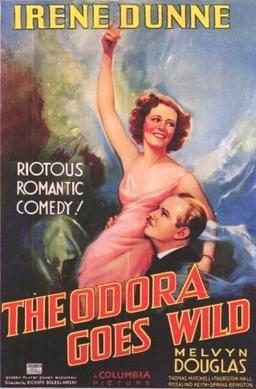

Theodora Goes Wild

Starring: Irene Dunne, Melvyn Douglas, Thomas Mitchell
Director: Richard Boleslawski
Writer: Sidney Buchman
Producer: Everett Riskin
Theodora Goes Wild is a 1936 American screwball comedy film that tells the story of the residents in a small town who are incensed by a risqué novel, unaware that the book was written under a pseudonym by a member of the town's leading family. It stars Irene Dunne and Melvyn Douglas and was directed by Richard Boleslawski. The film was written by Mary McCarthy and Sidney Buchman.
Trivia
- Nominated for: Academy Award for Best Actress; Academy Award for Best Film Editing.
Previous Showings
1 Run • 0 Festivals
All runs on record (1):
- May 7 - 10, 1994w/ The Awful Truth